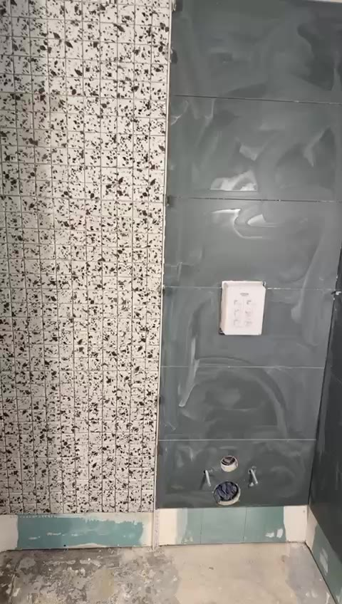

Pourquoi c'est si difficile
Une douche au ras du sol a besoin de place sous le carrelage : le siphon de la bonde, puis le tuyau qui part vers la colonne avec une pente régulière. En maison, on creuse la chape ou on passe par le vide sanitaire. En appartement, sous le carrelage, il y a la dalle de béton de l'immeuble, et le plafond du voisin du dessous.
Cette dalle ne se creuse pas : elle porte le bâtiment et appartient à la copropriété. Sans hauteur sous le sol, l'eau ne peut pas s'écouler depuis une douche posée au même niveau que le reste de la pièce.
Les cas où c'est possible
Il arrive qu'il y ait assez d'épaisseur : une chape ancienne très épaisse, un plancher déjà surélevé par une précédente rénovation, une évacuation qui passe tout près. Nous le vérifions lors de la visite, en mesurant la hauteur disponible et la distance jusqu'à la colonne. Mais c'est l'exception, pas la règle.
Le receveur extra-plat
C'est la solution que nous posons le plus souvent en appartement. Le receveur est posé sur le sol, avec une marche de quelques centimètres seulement : on entre dans la douche sans enjamber, et le résultat ressemble beaucoup à une douche à l'italienne, surtout avec une grande paroi en verre.
Il est rapide à poser, étanche par construction et existe dans de nombreuses tailles et couleurs, y compris sur mesure.
Surélever le sol de la salle de bain
Pour garder une douche carrelée de plain-pied, on peut rehausser tout le sol de la salle de bain de quelques centimètres. La douche est alors au ras du nouveau sol, et il reste une petite marche à la porte de la pièce. C'est un vrai choix à faire ensemble : la hauteur sous plafond et la porte doivent le permettre.
La pompe de relevage
Une petite pompe peut remonter l'eau de la douche vers l'évacuation. Elle fait un peu de bruit à chaque douche, demande un entretien et une prise électrique, et le règlement de certaines copropriétés l'encadre. Nous la gardons pour les cas où rien d'autre n'est possible.
Ce que nous regardons à la visite
- La hauteur disponible entre la dalle et le sol fini
- L'emplacement et la hauteur de la colonne d'évacuation
- La distance entre la douche et cette colonne
- La hauteur sous plafond et la porte, si l'on surélève le sol
- Le règlement de la copropriété



Questions fréquentes
Peut-on casser un peu la dalle pour passer le tuyau ?
Non. La dalle fait partie de la structure de l'immeuble : on ne la creuse pas.
Un receveur extra-plat, est-ce vraiment une douche à l'italienne ?
Pas tout à fait, puisqu'il reste une petite marche. Mais l'accès est presque le même, et beaucoup de nos clients en appartement font ce choix.
Le devis est-il gratuit ?
Oui. Vos photos nous donnent une première idée, puis nous mesurons sur place la hauteur disponible avant de vous proposer une solution.
Devis gratuit après visite sur place. Envoyez-nous quelques photos de votre pièce pour une première estimation, puis nous fixons ensemble un rendez-vous.
Envoyer mes photos Appeler le 07 63 14 76 27Nos prestations
Nos autres conseils
Nous intervenons dans toute l'Île-de-France
Parlons de
votre salle de bain.
Envoyez-nous des photos de votre pièce pour une première estimation, puis on fixe ensemble un rendez-vous pour le devis sur place.
07 63 14 76 27Fermé le dimanche
depuis Chanteloup-les-Vignes (78)